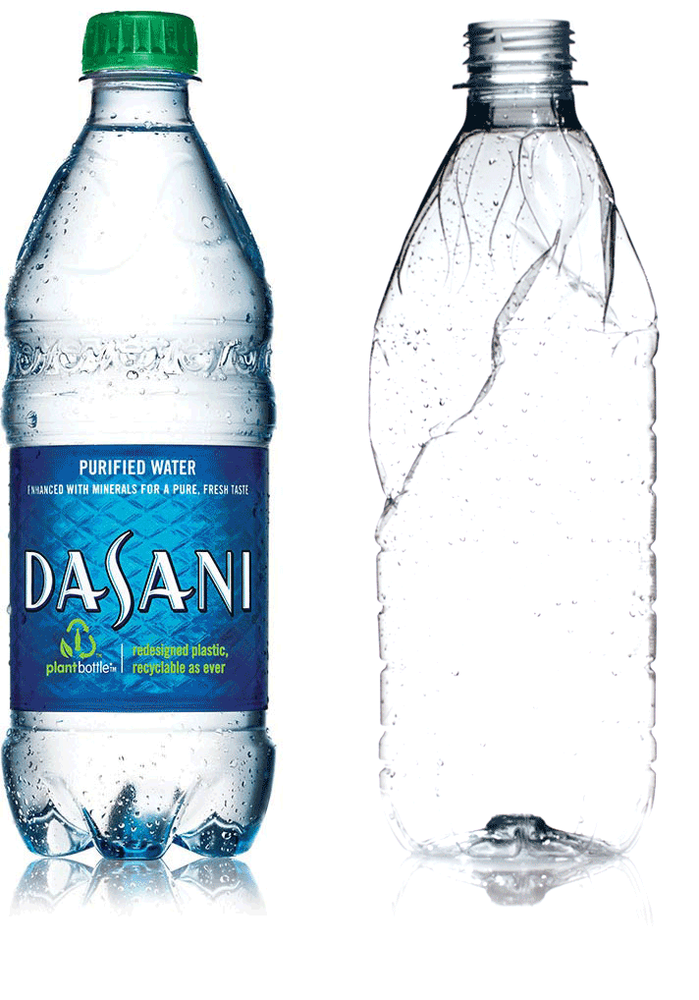
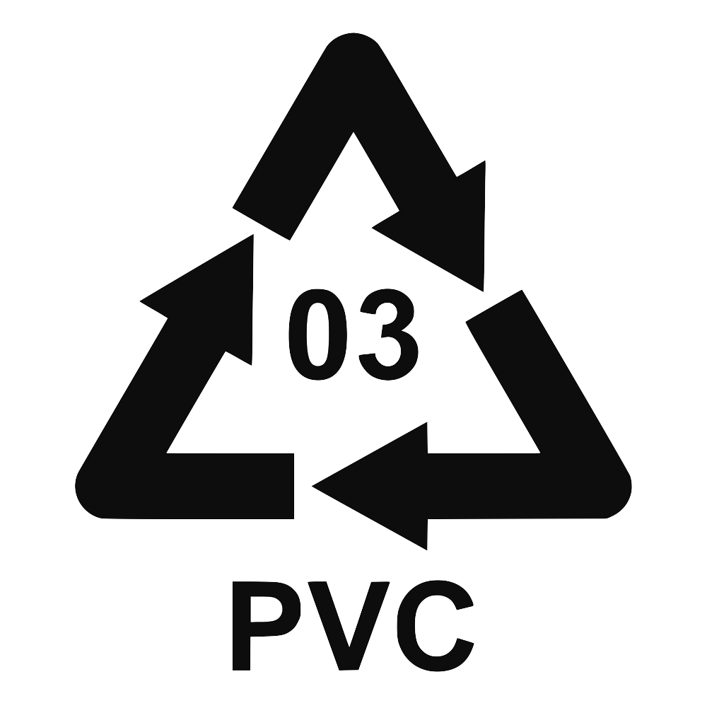
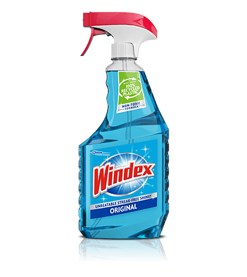
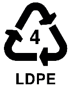
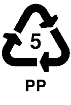
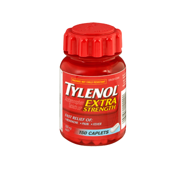
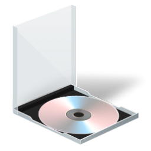
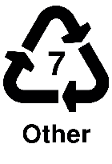
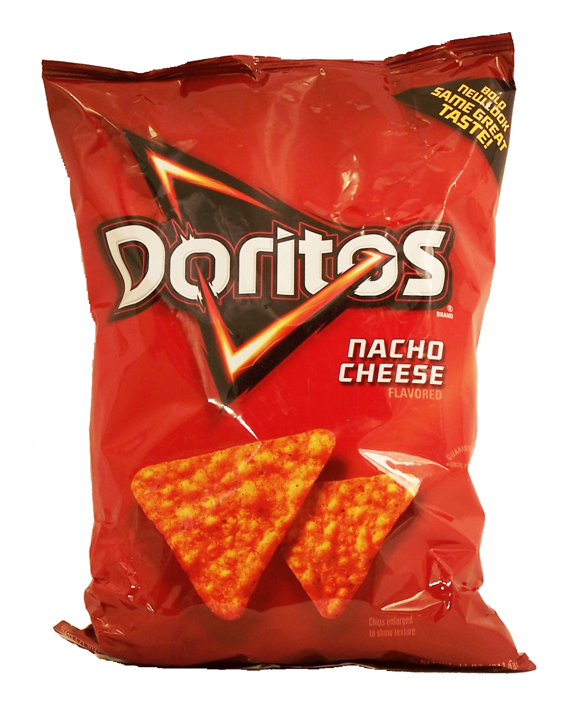

RECYCLING NUMBERS
| Recycling Number | List of items | Is it recyclable? |
|---|---|---|
The acronym PETE or PET stands for Polyethylene Terephthalate. |
 The following items are Plastic No. 1: Plastic and soda bottles Salad dressing bottles Peanut Butter Jars Microwaveable food trays Mouthwash bottles |
YES |
The acronym HDPE stands for High Density Polyethylene. |
The following items are Plastic No.2: Milk Jugs Laundry Detergent Bottles Butter Tubs Motor Oil Bottles Shopping bags, not all |
YES |
 The acronym PVC or V stands for polyvinyl chloride. |
 Cooking Oil Bottles Shampoo Bottles Medical Tubing Wire Jacketing Window Spray Bottles |
YES |
 The acronym LDPE stands for Low Density Polyethylene. |
The following items are Plastic No. 4: Shrink Bags such as grocery bags, produce bags,and frozen food bags. Toys Squeezeable food condiments container Plastic Films |
YES |
 The acronym PP stands for Polypropylene. |
 The following items are Plastic No. 5: Medicine Bottles Syrup Bottles Ketchup Bottles Straws Bottle Caps |
YES |
The acronym PS stands for Polystyrene, which is a extremely, flexible plastic. |
 The follwing items are Plastic No.6: CD CasesSoft Foam Packing Peanuts Take-out Containers Egg Cartons |
YES |
 The acronym OTHER stands for miscallenous items such as items that are oven baking bags. |
 The following items are Plastic No.7: Large 3-5 Gallons Jugs Or other mixed material item |
SOMETIMES DEPENDING ON YOUR LOCAL COMMUNITY |